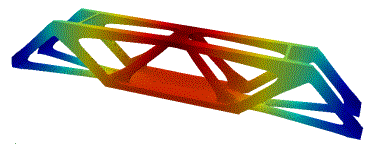
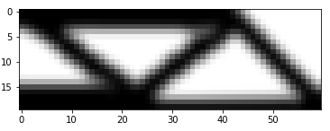
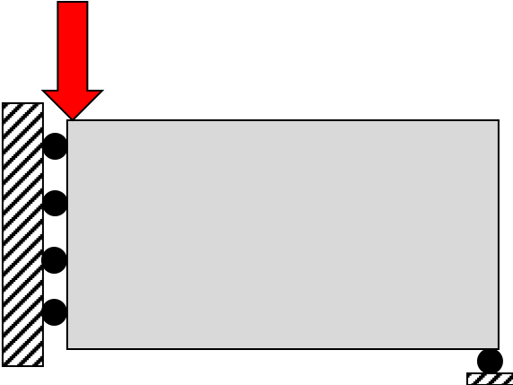
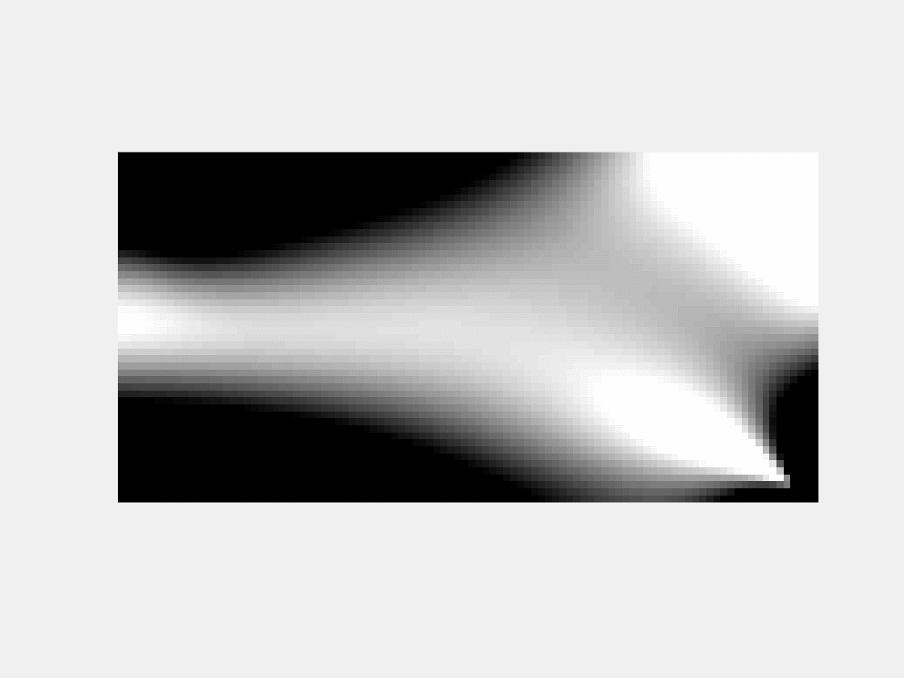

Topology optimization is a mathematical method that optimizes material distribution within a given design space for a given set of loads, boundary conditions, and constraints with the goal of maximizing the performance of the system. For example, we can use topology optimization methods to design bridge structures that are structurally safe and use a reduced amount of material. In this MP, you will write part of a topology optimization algorithm to design a simple bridge like the one in the figure below. For simplicity, you will model the bridge as a two-dimensional problem (think of modeling only one side of the bridge) and also assume symmetry, so that your final design will look something like the figure on the right.


To accomplish this, let us consider the rectangular box below that is constrained from horizontal movement on the left side and from vertical movement on the bottom right corner. Under these movement constraints, a load is then applied to the block at the top left corner.


Let's say that we only have enough material to fill half of the rectangular box pictured above. From now on, we will call the rectangular box the design space. Using the material given, we want to create a structure within the box that will be as stiff as possible. The natural thing to do is formulate this problem as an optimization problem and solve it! The animation above shows the optimization steps, wherein material is distributed inside the design space (the presence of material is represented by black regions and white regions indicate no material) under the given constraints.
We will walk you through the steps to solve this optimization problem. First, we need to
create a uniform grid of unit sized squares representing the material inside the
rectangular design space. We will call each square an "element".
So for example, a domain with dimensions 100 by 50 will have a total of
5000 square elements. Here we will denote nelx the number of elements in the x-direction,
nely the number of elements in the y-direction, and hence nel = nelx*nely
is the total number of elements.
We define a design variable $x$ for each square element, where $x = 1$ means the element is filled with material, and $x = 0$ means the element is not filled with material. In practice, the design variable is a continuous function that can assume values in between `0` and `1`, but the implementation of the algorithm favors the extreme values. The optimization question here becomes: what is the best distribition of $0s$ and $1s$ inside the rectangular domain that maximizes the stiffness of the structure?
Here we store all the design variables $x$ for each square element as the 1d numpy array xvec,
such that xvec.shape = (nel,). The elements are ordered column-wise, left to right, as
indicated in the figure below:
The array xvec can be reshaped in different ways to reflect the physical
two-dimensional arrangement of the $x_i$ values. For this MP,
we will use X = xvec.reshape(nelx,nely). This choice of reshaping
is needed to keep consistency with the backend implementation of the optimization algorithm.
Once X
is defined, you can plot the resulting image using:
xvec1 corresponding to the figure below:
xvec2 corresponding to the figure below:
You must also write the function get_change that returns the maximum absolute
difference between two arrays:
Your code snippet should define the following variable(s) and/or function(s):